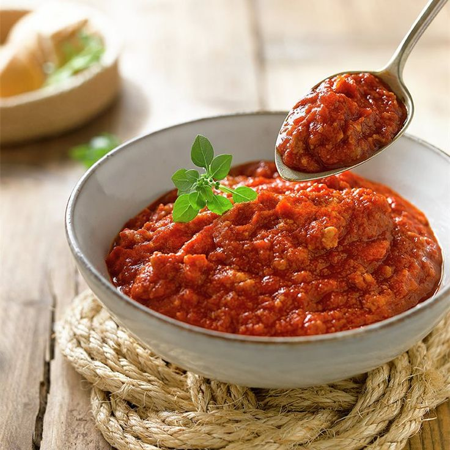

Salsa Boloñesa
Ingredientes
- Carne picada 200 gr
- Aceite 20 ml
- Cebolla 30 gr
- Ajo 2 gr
- Pure de tomate 200 gr
- Caldo de carne c.n
- Sal, pimienta, laurel c.n
- Pimenton
Elaboracion
- Dorar en el aceito el ajo y la cebolla finamente picados
- Incorporar la carne picada. Revolver bien con cuchara de madera y dejar dorar por 1 minuto mas.
- Incorporar el pure de tomate y los condimentos.
- Cocinar por 15 minutos aproximadamente, controlando y adicionando carldo de carne cada vez que lo
necesita.

Salsa Boloñesa: salsa de tomate + carne picada
 Plato principal: Pasta con salsa
Plato principal: Pasta con salsa